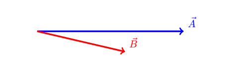
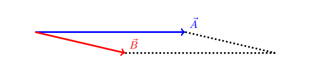
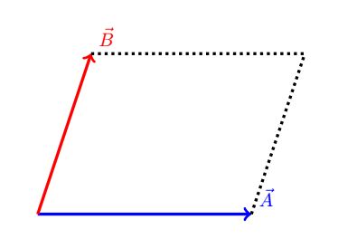
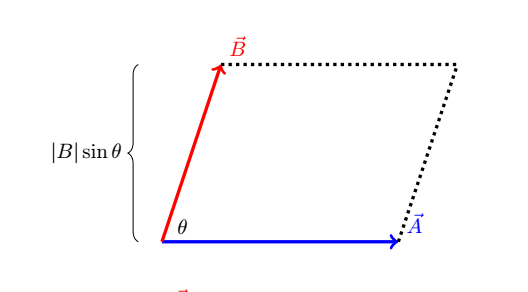
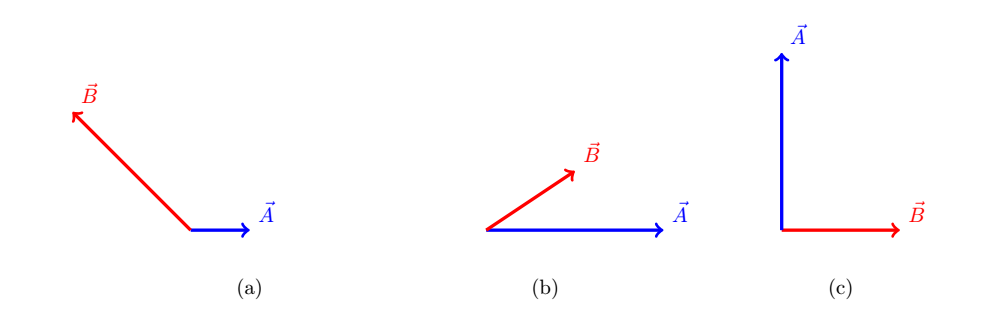

B8.1 Cross Product#
B8.1.1 Introduction#
The cross product is the second vector product we encounter in introductory physics. The cross product is a lot more complex than the dot product for various reasons that we will not discuss in this course. If you are interested in learning much more about the cross product, you will need to take courses in abstract algebra as well as differential geometry. In our course, we will restrict ourselves to learn how to calculate the cross product using both a geometric and an analytic approach, similar to our discussion on the dot product.
The main difference between the cross and dot products is that the cross product returns a vector instead of a scalar.
The cross product is a very important operation in physics. For example, angular momentum and torque are calculated using cross products. If you take the second semester of introductory physics you will see a lot more applications of the cross product.
B8.1.2 Geometrical Definition#
As the subtitle says, this definition relies on vector quantities we associate with the geometry of the vectors such as length and angle. We define the magnitude of the cross product between two vectors \(\vec{A}\) and \(\vec{B}\) as
where \(A\) and \(B\) are the magnitudes (or lengths) of the two vectors and \(\theta\) is the smallest angle between the two vectors, that is, \(\theta \in [0^\circ,180^\circ]\). From the notation, it may be evident why it is called the cross product.
Taking the cross product between two vectors results in a new vector that is perpendicular to the plane containing the two vectors \(\vec{A}\) and \(\vec{B}\).
The equation above only calculates the magnitude of the new vector, not its direction.
The cross product is not commutative: \(\vec{A} \times \vec{B} \neq \vec{B} \times \vec{A}\).
Finding the Direction: Method 1 :: Right-Hand Rule#
Oh, this is so much fun!
Make a sketch of the two vectors and align their tails together.
Form your hand as you would for a handshake (no fist bump here) and extend a big happy thumb.
Align your finger tips with the first vector in the cross product.
Flex your finger to point towards the second vector.
Your thumb now aligns in the direction of the cross product.
Notice that your thumb is always perpendicular to the plane containing your index and middle finger.
The wikipedia page on cross product has an illustration of a slightly different version (you will need to scroll down a little bit).
Finding the Direction: Method 2 :: Parallelogram#
I have not been able to find a name for this rule, so I will call it the parallelogram Rule:
Make a sketch of the two vectors and align their tails together.
Draw a parallelogram spanned by the two vectors.
The parallelogram is in the plane of the two vectors.
Rotate the first vector across the parallelogram and onto the second vector.
if the rotation is counterclockwise (ccw) then the cross product is a vector up through the plane containing the two vectors.
if the rotation is clockwise (cw) then the cross product is a vector down through the plane containing the two vectors.
Example 1
Consider a vector \(\vec{A}\) with a length of 5.0 units along the positive x-axis and a vector \(\vec{B}\) with a length of 3.0 units (let us ignore the units for now). The angle between the two vectors is \(\theta = 15^\circ\) clockwise from \(\vec{A}\) towards vector \(\vec{B}\). The magnitude of the cross product between the two vectors is
We notice that this is just a number. There is no direction associated with this answer, and we must find the direction using a rule to determine the direction of a cross product.
Solution: Method 1 from above
Make a sketch 
I am making a handshake with my hand.
Aligning my index finger with vector \(\vec{A}\).
Attempting to rotate my middle finger to align it with vector \(\vec{B}\). The only way for me to be able to do that is to orient my hand such that my thumb is pointing into the screen of my computer.
The cross product is in the direction of my thumb: into the screen.
Conclusion: the cross product is pointing into my screen with a magnitude of 3.9
Solution: Method 2 from above
Make a sketch 
Draw a parallelogrom in the sketch
Observe that the plane of the parallelogram is the same as the plane of my computer screen (or piece of paper if printed out).
Imagine that I am rotating vector \(\vec{A}\) across the parallelogram and onto vector \(\vec{B}\).
The rotation is clockwise (cw) and therefore the cross product is directed down through the plane, which is into my screen.
Conclusion: the cross product is pointing into my screen with a magnitude of 3.9.
Example 2
Let us calculate the cross product between a few unit vectors. The magnitude of each unit vector is 1, and we know that \(\hat{e}_x\) and \(\hat{e}_y\) are perpendicular. With that in mind, we have the following relationships for the magnitude of the cross products:
Example 2.1
since the angle between a vector and itself is \(0^\circ\).
Since the cross product is zero, there is no need to determine a direction.
Example 2.2
Assuming the two unit vectors are in the plane of the computer screen, with \(\hat{e}_x\) in positive x-direction and \(\hat{e}_y\) in the positive y-direction in a traditional xy-coordinate system, then using one of the rules above, we conclude that the cross product must be coming out of the screen.
Conclusion: the cross product \(\hat{e}_x \times \hat{e}_y\) is coming out of the screen with a magnitude of 1. However, the direction out of the screen is the same as the z-direction if we consider a traditional 3D coordinate system, and thus, the cross product \(\hat{e}_x \times \hat{e}_y\) is equivalent to a unit vector pointing in the positive z-direction:
or if we use the i,j, k notation:
Example 2.3
Similarly, we could find that
showing that the cross product is not commutative.
A vector is directed along the positive x-axis and has a magnitude of 5. A second vector has a magnitude of 8 and is directed at an angle of 32\(^\circ\) above the positive x-axis. Find the cross product between the two vectors. Remember to specify both magnitude and direction.
B8.1.3 Geometrical Interpretation of Cross Product#
While the cross product is a complex topic, we can associate a geometrical interpretation to it.
The magnitude of the cross product is the area of the parallelogram spanned by the two vectors in the cross product and the direction of the cross product provides the orientation of the parallelogram.
Ok, we can understand area of a parallelogram, but an orientation is just weird. In Calculus III as well as the second semester of this course we will see how to associate directions to areas etc. It is an extremely important concept at that point, so for now: just put it in the back of our mind and wait 🤓
Let us see how we arrived at the above conclusion: consider the parallelogram spanned by the two vectors \(\vec{A}\) and \(\vec{B}\).
If we make the projection of vector \(\vec{B}\) onto the y-axis (assuming the vectors are positioned in a traditional xy-coordinate system), then the length of the projection is $\( |\vec{B}|\sin\theta \)$, which is illustrated in the next figure:
However, if we multiply this projection with the length of vector \(\vec{A}\), then it is the same as the rule for finding the area of the parallelogram:
Hence, we can conclude that the magnitude of the cross product between two vectors represents the area of the parallelogram spanned by the two vectors.
Find the cross product between \(\hat{i}\) and \(\hat{k}\).
Complete the table below
Problem |
Answer |
|---|---|
\(\hat{i} \times \hat{i} =\) |
\(\hat{0}\) |
\(\hat{i} \times \hat{j} =\) |
\(\hat{k}\) |
\(\hat{i} \times \hat{k} =\) |
|
\(\hat{j} \times \hat{i} =\) |
\(-\hat{k}\) |
\(\hat{j} \times \hat{j} =\) |
|
\(\hat{j} \times \hat{k} =\) |
|
\(\hat{k} \times \hat{i} =\) |
|
\(\hat{k} \times \hat{j} =\) |
|
\(\hat{k} \times \hat{k} =\) |
B8.1.4 Analytic Definition#
Phew, this approach is mathematically straightforward but very tedious. So let us just take a deep breath and do it. It is like doing dishes.
We will follow the distributive rules for vector algebra, which is similar to the ones for number algebra. We will be following the same appraoach as we did for the dot product:
Consider the vectors
and
The cross product is then
So far so good. Now we distribute the factors through the cross product:
Since the cross product is an operation between vectors only, it will only act between the unit vectors and we can move the vector components outside the cross products:
We can use the results from Example 2 (and your Box 3) above regarding the cross products among unit vectors, and we get
We should clean up this mess a little bit:
Hence, if we know the components of the two vectors, we can simply insert them into this equation.
We notice that the direction of the cross product is provided through the unit vectors while the magnitude is not stated explicitly. However, we can find the magnitude by using the pythagorean theorem.
Example 3
Given two vectors with exact components: \(\vec{A} = \begin{bmatrix} -1 \\ 4 \\ 3 \end{bmatrix}\) and \(\vec{B} = \begin{bmatrix} 2 \\ 5 \\ -2 \end{bmatrix}\), calculate the cross product between the two vectors.
Solution
We insert the components into the equation from above:
Our answer is
If we want to know the magnitude of this vector, we would apply the pythagorean theorem.
Given two vectors with exact components: \(\vec{A} = \begin{bmatrix} 4 \\ 4 \\ 3 \end{bmatrix}\) and \(\vec{B} = \begin{bmatrix} -2 \\ 5 \\ -2 \end{bmatrix}\), calculate the cross product between the two vectors and find the magnitude of the cross product.
Given two vectors with exact components: \(\vec{A} = \begin{bmatrix} 4 \\ 4 \\ 0 \end{bmatrix}\) and \(\vec{B} = \begin{bmatrix} -2 \\ 5 \\ 0 \end{bmatrix}\).
Calculate the cross product between the two vectors.
Consider a traditional xyz-coordinate system. What direction is the cross product?
What plane does the vectors \(\vec{A}\) and \(\vec{B}\) lay in?
Given two vectors with exact components: \(\vec{A} = \begin{bmatrix} 4 \\ 0 \\ 4 \end{bmatrix}\) and \(\vec{B} = \begin{bmatrix} -2 \\ 0 \\ 1 \end{bmatrix}\). Can you without doing any calculations determine along which coordinate axis the cross product is?
B8.1.5 Important Observations#
1. Importance of Projection#
We notice that only the projected component of one vector perpendicular to the other vector is important. The implication is that the cross product is zero for parallel vectors.
2. Direction of cross product#
The direction of the cross product is always perpendicular to the plane containing the two vectors involved in calculalting the cross product.
3. Interpretation#
The magnitude of the cross product is a representation of the area of the parallelogram spanned by the two vectors.
Consider the three sketches. Based on the important observations, determine without calculation whether the cross product \(\vec{A}\times\vec{B}\) will be: negative, zero, or positive. Consider the direction out of the screen to be positive and the direction into the screen to be negative. Under which circumstance would the cross product be zero?
Apply Important Observation 1 to the following problem: Consider the three sketches. Determine by inspection only, the ranking of the magnitude of the cross product \(\vec{A}\times\vec{B}\) from smallest to largest.

B8.1.6 Application#
Torque#
We will see a few concepts in physics that are quantified through the cross product. The one we are most familiar with from everyday life is the torque (or rotational force), and perhaps this example will help put the cross product into a better perspective.
The torque acting on an object by an applied force depends on the force and where the force is applied. For example, if you want to open a door, it is a lot easier to open it if you push on the opposite side of the hinges and push perpendicular to the door. Similarly, if you use a wrench to losen a nut, you should hold the wrench at the end opposite to the nut and apply a force perpendicular to the handle of the wrench.
In the above examples, the distance from the hinges to the place on the door where you apply the force, and the distance from the nut to where you apply the force on the wrench, is called the moment arm or the lever arm.
In general, the directed line segment from the point of rotation (e.g. the hinges or the nut) to the point of interaction (where the force is applied) is \(\vec{r}_{f}\) and the force is \(\vec{f}\). The torque \(\vec{\tau}\) (greek later “tau”) is defined as
A lug nut on a car wheel needs to be tighten. At first, you are using the lug wrench that came with the car. The lug wrench is 30 cm long. You are capable of supplying a force of 350 N. Since you know how to use a wrench, you apply the force perpendicular to the handle of the lug wrench and as far away from the nut (rotation point) as possible.
How much torque do you supply in units of Nm (Newton-meter)?
According to the manufaturer, it requires a torque of 80 foot-lbs (good ol’ imperial units) which is equivalent of 108 Nm. Can you tighten the lug nut as required?
Since you are short of muscle power to tighten this nut, you can either call a friend or use your physics knowledge. Chosing the later, you grab a pipe to extend the length of the wrench by 15 cm. What is the maximum torque you can supply now?
As part of a home improvement project, you are using a manual screw driver. In this process, you grab a screw driver with your right hand (this is important for this example, and I mean no offense to discriminate against left-hand people: I respect and love you).
In order to tighten a screw you apply a force along the direction of your finger tips (you have to do that in order to use the screw driver, right!). The axis of rotation is along the screw driver and through its center. Your applied force of 30 N is a short distance from that axis, say 1 cm.
How much torque do you supply in units of Nm (Newton-meter)?
What direction is the torque?
If you answered down towards the screw in previous question, then you are right! It is in the direction of the thumb if you hold a screw driver in a normal manner with your right hand. This is another version of the right-hand rule!
Comment: When you are using your right-hand to tighten something, like a jar etc., the applied torque is pointing in the direction of your thumb provided you tighten something like most people would do :)